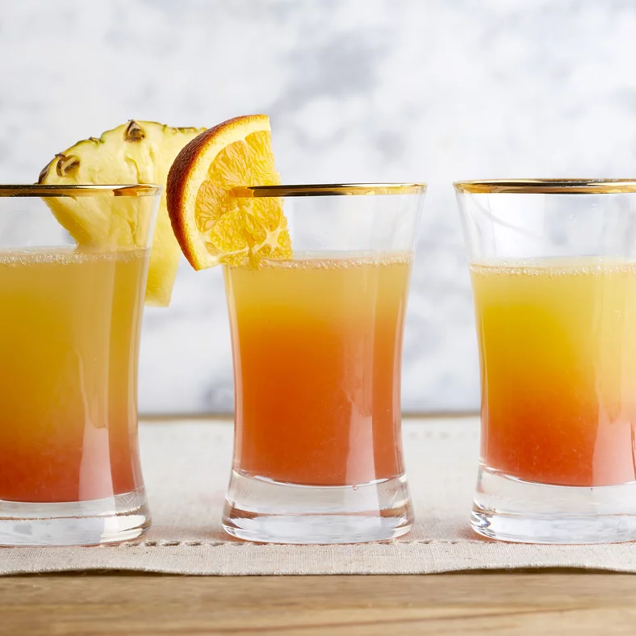

Pineapple Sunrise Mimosa

Description
A simple citrus cocktail for a relaxing morning.
Makes 12 servings
Ingredients
- 4 1/2 cups pineapple juice
- 1 cup 2 tablespoons orange juice
- 1/4 cup 1 tablespoon 1 teaspoon lime juice
- 1/4 fresh pineapple; sliced
- 1/2 blood orange; sliced
- 1/2 lime; sliced
- 1 bottle Prosecco; 750 ml
- 1/4 cup Campari
- Pineapple and orange slices for garnish
Steps
- Stir pineapple, orange, and lime juices in large pitcher/punch bowl.
- Add pineapple, blood orange, and lime slices.
- Cover and refrigerate 2-24 hours.
- Pour 1/2 cup juice mixture into serving glass.
- Add 1/4 cup Prosecco to glass.
- Drizzle in 1 teaspoon Campari.
- Garnish if desired.